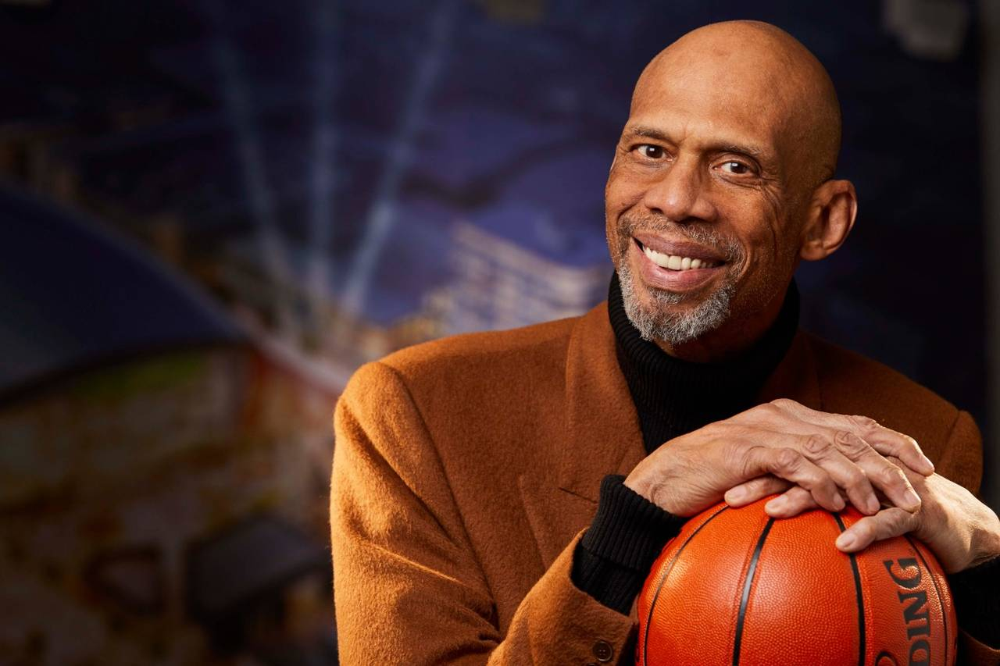
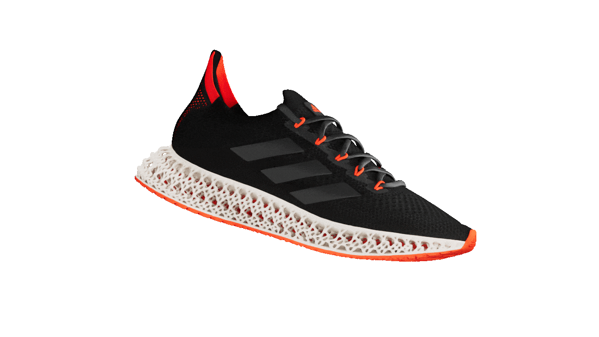
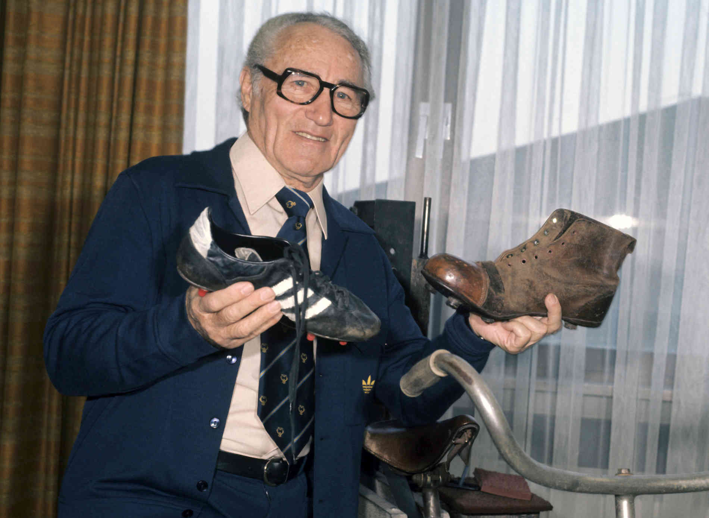
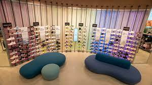

Questão
Em 1970 surge o icone superstar o primeiro tenis com cano baixo inicialmente feito pra as quadras de basquete se tornou viral atraves do jogador....
Resposta correta
Abdul-Jabbar
Abdul-Jabbar nascido em 16 de abril de 1947 é um ex-jogador de basquete profissional norte-americano que jogou 20 temporadas na (NBA) pelo Milwaukee Bucks e Los Angeles Lakers, ele usava o superstar dentro das quadras assim viralizando com sua tecnologia e design inovador dando mais mobilidade em quadra por ser um tenis de basquete de cano baixo.
Questão
O EMMNXT tem como objetivo transformar a jornada do consumidor em loja...
Resposta correta
O conectando,engajando e inspirando

Em 2018 O conectar engajar e inpirar entrou para fazer parte da nossa cultura de serviço, que tem como objetivo fazer todo momento importar para todos os nossos clientes sem qualquer escessão.
Questão
O programa especialista running e women foi criado com intuito de...
Resposta correta
Trazer colaboradores mais capacitados em lojas
.png)
Esse programa tem como objetivo trazer colaboradores mais capacitados, com informação e especialização de nossos produtos focado nesses segmentos, para assim ter um conhecimeto mais acertivo em loja para nosso consumidor.
Questão
O tenis 4dfwd tem uma tecnologia que gera retorno de energia te impulsionando para..
Resposta correta
Frente economizando passos
Lançado em 10 de outubro a mais nova versão do 4DFWD possui uma entressola de treliça confeccionada em impressão 3D ela possui uma tecnologia de retorno de energia impulsionando o corredor para frente fazendo assim economizar passos ao correr.
Questão
Em que ano nasce oficialmente a Adidas? e em que cidade ela foi instalada inicialmente?
Resposta correta
1949 em Herzogenarauch
Em 1924 os irmãos Dassler criam sua fabrica de calçados na lavanderia de sua casa, em 1948 ocorre a divisão de sociedade encerrando a parceria entre os mesmos fazendo com que cada um siga seu caminho. A adidas nasce oficilamente em 1949 em uma cidade chamada Herzogenarauch.
Questão
Em 2022 abriu uma loja conceito com 700m2 em formato stadium na AV.paulista que loja foi essa?
Resposta correta
Top Center
A loja conceito que está localizada na Av. Paulista teve a abertura oficial dia 18 de Novembro, ela possui espaços de interatividade e relacionamento com os clientes, além disso possui uma certeira completa com nossas principais linhas e produtos.
Questão
Qual objetivo do programa in store coach?
Resposta correta
Ter maior produtividade e rentabilidade junto ao time de vendas

O projeto in store coach é uma série de treinamentos com graduação ele tem como papel transformar e desenvolver os colaboradores em loja para uma maior produtividade e evolução como pessoa, essa pessoa será um treinador de loja de alta performance que será a referência de produtos e de conhecimento da marca.
Questão
Na campanha de incentivo VENDE QUE É GOL tivemos 15 vencedores de lojas BCS, que loja ficou em 1° lugar?
Resposta correta
BCS- Rio Branco,Via Verde
A campanha de incentivo Vende que é Gol teve inicio no dia 14 de Novembro, nela são analisadas o crescimento sellout VS ano passado, são 15 lojas BCS e 5 OCS ganhadoras em cada periodo com premiações em valor monetário em jogo.
Questão
Sabemos que o jeans utiliza muita água em sua confecção, quantos litros é utilizado para confecção de 2 peças de jeans?
Resposta correta
6.800 a 8.000 litros

A sustentabilidade é uma pauta muito importante na adidas, para uma peça de jeans ser fabricada precisa de muita água potavel no processo de fabricação do algodão, assim causando um desperdicio enorme de agua potável, o consumo de compra desnecessário aumenta ainda mais esses numeros nos impactando drasticamente.
Questão
Qual evento que temos em Q2 e Q4?
Resposta correta
Bootcamp

O Bootcamp é o maior evento do ano que temos, ele acontece no inicio do ano em (Q1) e no final do ano em (Q4), nele são passadas as grandes informações, atualizações e noticias do ano com um dia repleto de interatividade, conectivade entre todos e muitos momentos imersivos.